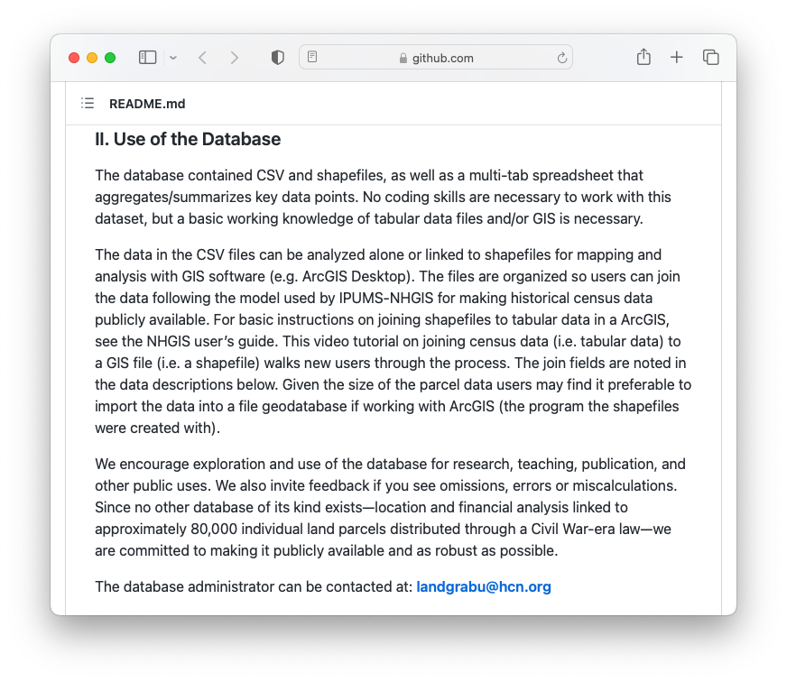
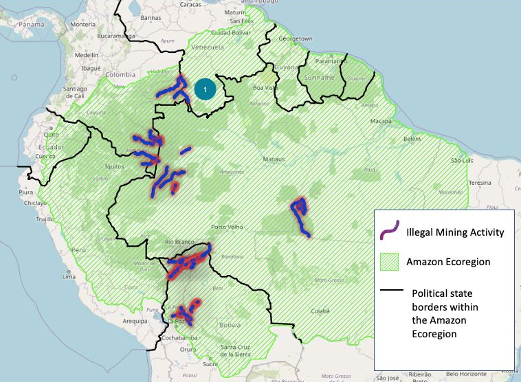

Spring 2023 Harvard Map Collection
Collections and support services
 Historic maps of Havana in the Harvard Map Collection
Historic maps of Havana in the Harvard Map Collection
 Global volcanoes dataset
in the Harvard Geospatial Library (HGL).
Global volcanoes dataset
in the Harvard Geospatial Library (HGL).

Workshops
 Mapping Inequality
project via the University of Richmond’s Digital Scholarship Lab.
Mapping Inequality
project via the University of Richmond’s Digital Scholarship Lab.

 Land-Grab Univerisities
interactive digital project.
Land-Grab Univerisities
interactive digital project.


Spring 2023 workshop offerings. Registration via the Harvard Library Events calendar .
Office hours

Map created by Luisa Shido.
Tutorials and project examples